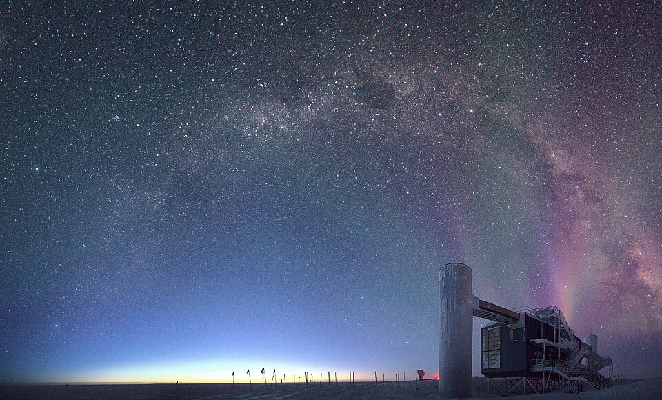

A Nobel Prize for a new view of the universe
The Royal Swedish Academy of Sciences announced Francis Halzen as the 2026 Nobel laureate in Physics. It recognised his decisive contributions to the IceCube Observatory at the South Pole and the discovery of high-energy neutrinos from astrophysical sources.
Sources & further reading
Royal Swedish Academy of Sciences ↗Story or event date · Researched through October 28, 2026
